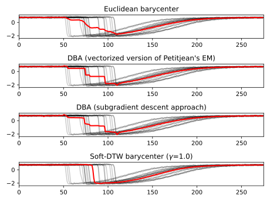

Note
Click here to download the full example code
Barycenters¶
This example shows three methods to compute barycenters of time series.
For an overview over the available methods see the tslearn.barycenters
module.
tslearn provides three methods for calculating barycenters for a given set of time series:
Euclidean barycenter is simply the arithmetic mean for each individual point in time, minimizing the summed euclidean distance for each of them. As can be seen below, it is very different from the DTW-based methods and may often be inappropriate. However, it is the fastest of the methods shown.
DTW Barycenter Averaging (DBA) is an iteratively refined barycenter, starting out with a (potentially) bad candidate and improving it until convergence criteria are met. The optimization can be accomplished with (a) expectation-maximization [1] and (b) stochastic subgradient descent [2]. Empirically, the latter “is [often] more stable and finds better solutions in shorter time” [2].
Soft-DTW barycenter uses a differentiable loss function to iteratively find a barycenter [3]. The method itself and the parameter \(\gamma=1.0\) is described in more detail in the section on DTW. There is also a dedicated example available.
[1] F. Petitjean, A. Ketterlin & P. Gancarski. A global averaging method for dynamic time warping, with applications to clustering. Pattern Recognition, Elsevier, 2011, Vol. 44, Num. 3, pp. 678-693.
[2] D. Schultz & B. Jain. Nonsmooth Analysis and Subgradient Methods for Averaging in Dynamic Time Warping Spaces. Pattern Recognition, 74, 340-358.
[3] M. Cuturi & M. Blondel. Soft-DTW: a Differentiable Loss Function for Time-Series. ICML 2017.
# Author: Romain Tavenard, Felix Divo
# License: BSD 3 clause
import numpy
import matplotlib.pyplot as plt
from tslearn.barycenters import \
euclidean_barycenter, \
dtw_barycenter_averaging, \
dtw_barycenter_averaging_subgradient, \
softdtw_barycenter
from tslearn.datasets import CachedDatasets
# fetch the example data set
numpy.random.seed(0)
X_train, y_train, _, _ = CachedDatasets().load_dataset("Trace")
X = X_train[y_train == 2]
length_of_sequence = X.shape[1]
def plot_helper(barycenter):
# plot all points of the data set
for series in X:
plt.plot(series.ravel(), "k-", alpha=.2)
# plot the given barycenter of them
plt.plot(barycenter.ravel(), "r-", linewidth=2)
# plot the four variants with the same number of iterations and a tolerance of
# 1e-3 where applicable
ax1 = plt.subplot(4, 1, 1)
plt.title("Euclidean barycenter")
plot_helper(euclidean_barycenter(X))
plt.subplot(4, 1, 2, sharex=ax1)
plt.title("DBA (vectorized version of Petitjean's EM)")
plot_helper(dtw_barycenter_averaging(X, max_iter=50, tol=1e-3))
plt.subplot(4, 1, 3, sharex=ax1)
plt.title("DBA (subgradient descent approach)")
plot_helper(dtw_barycenter_averaging_subgradient(X, max_iter=50, tol=1e-3))
plt.subplot(4, 1, 4, sharex=ax1)
plt.title("Soft-DTW barycenter ($\gamma$=1.0)")
plot_helper(softdtw_barycenter(X, gamma=1., max_iter=50, tol=1e-3))
# clip the axes for better readability
ax1.set_xlim([0, length_of_sequence])
# show the plot(s)
plt.tight_layout()
plt.show()
Total running time of the script: ( 0 minutes 3.462 seconds)